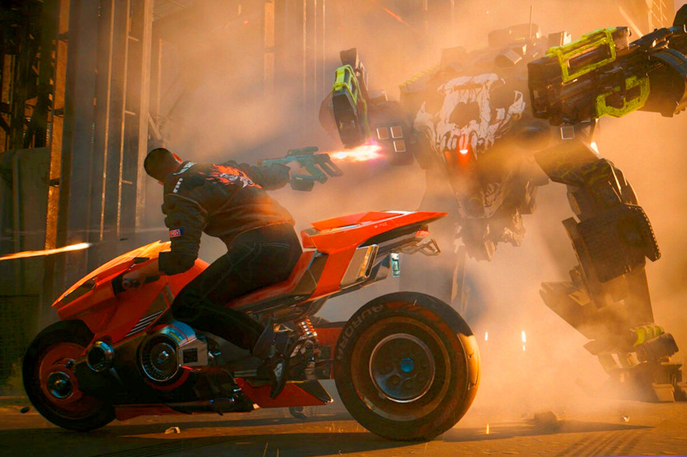

Este análisis de Cyberpunk 2077: Phantom Liberty iba a ser más comedido cuando completé la última obra de CD Projekt RED. Sin embargo, volví a pasármela para ver las alternativas que ofrece su trama, y el cambio de su historia es tan radical según tus decisiones que, de repente, las ideas que tenía en la cabeza cambiaron por completo. Phantom Liberty me ha parecido la aventura autocontenida más redonda que ha creado el estudio polaco, y probablemente la mejor expansión salida de sus oficinas, al menos para mí. Y eso son palabras mayores cuando existe The Witcher 3: Blood & Wine. Lo que comienza como un "remake" de espías de 'Escape from N.Y.' acaba convirtiéndose en una prueba a fuego de tus convicciones morales, mientras te adentras en un nido de víboras donde nadie dice la verdad. Cuando Johnny Silverhand (Keanu Reeves) es el único que parece tener una brújula moral, sabes que la cosa está j**ida… Y que los guionistas de CDPR han hecho un trabajo memorable.
